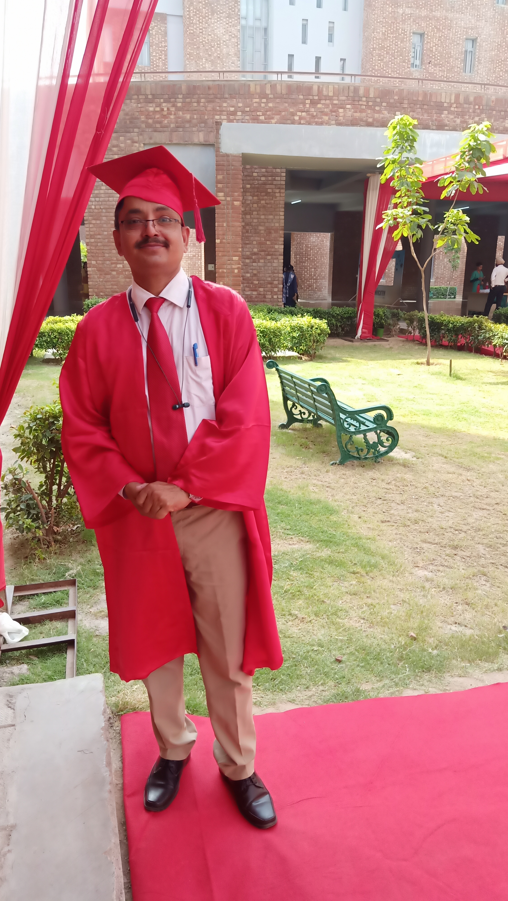

Academic Narrative
Dr. Mohd. Yaseen Khan is a seasoned academician and researcher with over 20 years of experience spanning teaching, research, and institutional administration at both college and university levels. Currently serving as an Associate Professor of Marketing and International Business at Vivekananda Global University, Dr. Khan has built a career defined by a commitment to fostering higher-order thinking and practical expertise in his students. His dual background, including nearly three years of industry experience and 19 years in academia, allows him to bridge the gap between theoretical frameworks and market realities.
Core Expertise and Pedagogical Approach
Dr. Khan’s instructional repertoire is extensive, covering specialized subjects such as Consumer Behaviour, Strategic Management, Digital Marketing, and International Business. He is recognized for his proficiency in Outcome-Based Education (OBE), specifically in mapping and attaining Course Outcomes (CO) and Program Outcomes (PO). His teaching methodology is highly interactive, utilizing tools like case studies, class assignments, and the Expectancy Value Model (EVM) to help students align their capabilities with industry requirements.
Research Contributions and Scholarly Impact
A prolific scholar, Dr. Khan earned his Ph.D. in 2017 from Uttarakhand Technical University, focusing on "Customized Communication, Value Proposition and Brand Loyalty in Retailing". His research footprint includes:
- Publications: Numerous articles in indexed journals covering topics like FDI in retailing, green products, and millennial post-purchase dissonance.
- Books: Author of "A Foresight on DIGITAL MARKETING" and "International Marketing".
- Innovation: He holds a patent publication regarding the analysis of digital marketing within the real estate sector.
- Supervision: He actively mentors Ph.D. scholars on diverse topics ranging from textile entrepreneurship in Bangladesh to marketing strategies for Kashmiri handicrafts.
Institutional Leadership and Community Engagement
Dr. Khan has held significant administrative responsibilities, serving as an IQAC Coordinator and BOS Convener, where he has been instrumental in syllabus design and quality assurance. His leadership extends to organizing high-impact events, such as the International Conference on Sustainability, Innovation, Practices and Advancements in Management (SIPAM-2025). Furthermore, his dedication to the academic community is evidenced by his long-standing tenure at the Army Institute of Management & Technology (AIMT), where he managed academic coordination and curriculum standardization for over a decade.
Through his roles as a Marketing Consultant and a leader of entrepreneurship clubs, Dr. Khan continues to influence the next generation of business leaders, ensuring they are equipped with both the mindset and the technical skills necessary for the modern global economy.

Key Leadership Roles
Programme Coordinator
Orchestrating academic curriculums and ensuring seamless program delivery to meet global standards.
IQAC Coordinator
Spearheaded the Annual Quality Assurance Report (AQAR) and quality assurance initiatives.
NAAC Deputy Chairperson
Served as Deputy Chairperson for NAAC Accreditation process Cycle-2, ensuring institutional excellence.